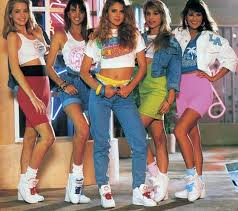

Fashion Trends Of The 80's

- Checked Skirt Suits

- Logo Bags

- Slip Dresses

- Animal Print Dresses

- Blush Pink Dresses And Suits

- Branded sportswear (whether it is champion or adidas it is still adopted by both men and women as a comfortable stylistic outfit)

- Hippy style (mini sunglasses and sneakers paired with a messy hair look and a unique outift is all you need to show your inner hipster)

- Tiny Bags

- Bucket hats (started with Liam Gallagher in the 90s and came back with Justin Bieber)